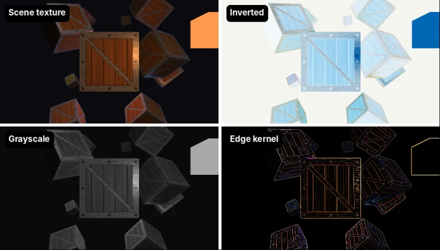

Advanced Metal
Render Targets#
examples/Sources/12-RenderTargets, run with swift run RenderTargets. Download all examples or see how to run them.Every frame so far has been drawn straight into the view's drawable. A render pass can draw into any texture instead, and that texture can then be read by a later pass. Rendering to a texture is the basis of post-processing, shadows, reflections, bloom and deferred shading. Nearly every chapter after this one uses it.
Coming from OpenGL
Metal has no framebuffer object. Its role is played by the MTLRenderPassDescriptor: a lightweight description of which textures are the color, depth and stencil attachments for one pass. There is nothing to bind or unbind and no "completeness" check.
Creating the textures#
A texture you render into needs the .renderTarget usage. To sample it afterward it also needs .shaderRead:
func makeOffscreenTextures(size: CGSize) {
let width = max(Int(size.width), 1), height = max(Int(size.height), 1)
let colorDescriptor = MTLTextureDescriptor.texture2DDescriptor(
pixelFormat: .bgra8Unorm, width: width, height: height, mipmapped: false)
colorDescriptor.usage = [.renderTarget, .shaderRead]
colorDescriptor.storageMode = .private
sceneColor = device.makeTexture(descriptor: colorDescriptor)!
let depthDescriptor = MTLTextureDescriptor.texture2DDescriptor(
pixelFormat: .depth32Float, width: width, height: height, mipmapped: false)
depthDescriptor.usage = .renderTarget
depthDescriptor.storageMode = .private
sceneDepth = device.makeTexture(descriptor: depthDescriptor)!
}
.private storage means only the GPU touches the texture. Call this function from mtkView(_:drawableSizeWillChange:) so the textures follow the window size.
Describing the pass#
let scenePass = MTLRenderPassDescriptor()
scenePass.colorAttachments[0].texture = sceneColor
scenePass.colorAttachments[0].loadAction = .clear
scenePass.colorAttachments[0].clearColor = MTLClearColor(red: 0.1, green: 0.1, blue: 0.1, alpha: 1)
scenePass.colorAttachments[0].storeAction = .store
scenePass.depthAttachment.texture = sceneDepth
scenePass.depthAttachment.loadAction = .clear
scenePass.depthAttachment.clearDepth = 1.0
scenePass.depthAttachment.storeAction = .dontCare
The load and store actions deserve thought:
- The color result is needed later, so it is stored.
- The depth buffer is only needed during the pass, so
.dontCarelets the GPU throw it away.
On Apple GPUs, a depth texture that is never stored can even be created with storageMode = .memoryless. It then occupies no memory at all, living only in the GPU's tile memory while the pass runs.
Two passes in one frame#
func draw(in view: MTKView) {
guard let commandBuffer = commandQueue.makeCommandBuffer() else { return }
// Pass 1: the scene, into our texture.
if let encoder = commandBuffer.makeRenderCommandEncoder(descriptor: scenePass) {
drawScene(encoder)
encoder.endEncoding()
}
// Pass 2: a full-screen triangle, into the drawable.
guard let viewPass = view.currentRenderPassDescriptor,
let drawable = view.currentDrawable,
let encoder = commandBuffer.makeRenderCommandEncoder(descriptor: viewPass) else { return }
encoder.setRenderPipelineState(postPipelineState)
encoder.setFragmentTexture(sceneColor, index: 0)
encoder.setFragmentSamplerState(samplerState, index: 0)
encoder.drawPrimitives(type: .triangle, vertexStart: 0, vertexCount: 3)
encoder.endEncoding()
commandBuffer.present(drawable)
commandBuffer.commit()
}
The pipeline states used in pass 1 must declare the formats of that pass's attachments. The post-processing pass has no depth attachment needs, so its pipeline leaves depthAttachmentPixelFormat unset; if the view still has a depth format, set it to match or set view.depthStencilPixelFormat = .invalid.
The full-screen triangle#
To run a fragment function over every pixel we need geometry that covers the screen. A single oversized triangle does it, with no vertex buffer at all. The vertex function builds positions from the built-in vertex index:
struct ScreenOut {
float4 position [[position]];
float2 uv;
};
vertex ScreenOut vertex_fullscreen(uint vertexID [[vertex_id]]) {
float2 uv = float2((vertexID << 1) & 2, vertexID & 2); // (0,0) (2,0) (0,2)
ScreenOut out;
out.position = float4(uv * float2(2, -2) + float2(-1, 1), 0, 1);
out.uv = uv;
return out;
}
fragment float4 fragment_post(ScreenOut in [[stage_in]],
texture2d<float> scene [[texture(0)]],
sampler s [[sampler(0)]]) {
return scene.sample(s, in.uv);
}
The triangle extends past the screen and is clipped to it. The y flip makes uv (0, 0) land on the top-left corner, matching Metal's texture origin, so a texture rendered by one pass is displayed upright by the next without any further fuss. The post pipeline has no vertex descriptor.
Run it and the scene looks exactly as before. That is the point: it now passes through a texture that we can manipulate.
Post-processing#
Inversion and grayscale change one pixel at a time:
float3 color = scene.sample(s, in.uv).rgb;
float3 inverted = 1.0 - color;
float gray = dot(color, float3(0.2126, 0.7152, 0.0722));
The weights reflect how sensitive the eye is to each channel.
Kernel effects combine each pixel with its neighbors using a small grid of weights, a convolution kernel:
static float3 applyKernel(texture2d<float> tex, sampler s, float2 uv, const float kernel[9]) {
float2 texel = 1.0 / float2(tex.get_width(), tex.get_height());
float3 result = float3(0);
for (int y = -1; y <= 1; y++) {
for (int x = -1; x <= 1; x++) {
float3 c = tex.sample(s, uv + float2(x, y) * texel).rgb;
result += c * kernel[(y + 1) * 3 + (x + 1)];
}
}
return result;
}
const float sharpen[9] = { -1, -1, -1, -1, 9, -1, -1, -1, -1 };
const float blur[9] = { 1/16.0, 2/16.0, 1/16.0, 2/16.0, 4/16.0, 2/16.0, 1/16.0, 2/16.0, 1/16.0 };
const float edges[9] = { 1, 1, 1, 1, -8, 1, 1, 1, 1 };
Use a sampler with .clampToEdge so the kernel does not wrap around at the borders.

Exercises#
- Render the scene at half resolution and stretch it to the screen. Compare
.nearestand.linearfiltering. - Build a rear-view mirror: render the scene a second time with the camera turned 180 degrees into a small texture, and show it on a quad at the top of the screen.